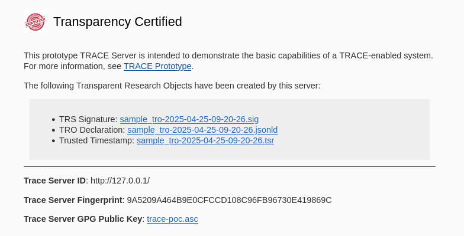

TRACE Sample Implementation#
This document illustrates the “full package”. It provides implementable examples of how to define a TRACE server in the formal specification of a TRS, then how to run two different types of TRACE-compliant workflows (automated and manual), and two separate ways to publish the final results (all-in-one server, and separately with a trusted repository).
Pre-requisites#
This guide will help you set up a TRACE server and infrastructure. This involves:
Having a way to sign the TROs (Trace Record Objects) that are generated by the TRACE server. TRACE allows for GPG and X.509. See Signing for more information.
Having a way to display the TRS (Trace Record Server) capabilities and the TROs that are generated by the TRACE server, via a web server.
Reference tools are implemented using Python, but could be implemented in other languages.
Throughout, we will provide a running example for a functional sample server.
Example
The example assumes that you have a system running Ubuntu 24.04 LTS. We assume that you can execute commands as the root user via sudo. We recommend that you create a dedicated user for running the TRACE Server. In our example we will use the username ubuntu.
You could run this in a virgin Ubuntu 24.04 container:
mkdir trace-test
cd trace-test
docker run -p 5000:5000 -v $(pwd):/project -w /project -u ubuntu -it --rm ubuntu:24.04
Before you begin, you need to have the following installed on your system:
You can do this by running the following commands:
sudo apt update
sudo apt install -y gnupg python3
Initial setup#
TRACE requires a digital signature mechanism. This is used to
sign the system descriptions (TRS)
sign the TROs (Trace Record Objects)
These should be permanently associated with a system, and can be used for multiple TRS. The private keys, as well as any passphrases used, should be kept secure.
Example: Generating a GPG key pair
To generate a GPG key pair, run the following command:
gpg --full-generate-key
gpg (GnuPG) 2.4.4; Copyright (C) 2024 g10 Code GmbH
This is free software: you are free to change and redistribute it.
There is NO WARRANTY, to the extent permitted by law.
Please select what kind of key you want:
(1) RSA and RSA
(2) DSA and Elgamal
(3) DSA (sign only)
(4) RSA (sign only)
(9) ECC (sign and encrypt) *default*
(10) ECC (sign only)
(14) Existing key from card
Your selection? 9
Please select which elliptic curve you want:
(1) Curve 25519 *default*
(4) NIST P-384
(6) Brainpool P-256
Your selection? 1
Please specify how long the key should be valid.
0 = key does not expire
<n> = key expires in n days
<n>w = key expires in n weeks
<n>m = key expires in n months
<n>y = key expires in n years
Key is valid for? (0) 2y
Key expires at Fri Jan 15 15:05:04 2027 UTC
Is this correct? (y/N) y
GnuPG needs to construct a user ID to identify your key.
Real name: Example Trace System
Email address: valid.email@my.organization.com
Comment:
You selected this USER-ID:
"Example Trace System <valid.email@my.organization.com>"
Change (N)ame, (C)omment, (E)mail or (O)kay/(Q)uit? O
At this stage you will be asked to enter a passphrase. This passphrase will be used to unlock your private key when you need to use it. Make sure you remember this passphrase, as you will need it later on. For this example we are going to use s3cr3tkey.
We need to generate a lot of random bytes. It is a good idea to perform
some other action (type on the keyboard, move the mouse, utilize the
disks) during the prime generation; this gives the random number
generator a better chance to gain enough entropy.
gpg: /home/ubuntu/.gnupg/trustdb.gpg: trustdb created
gpg: directory '/home/ubuntu/.gnupg/openpgp-revocs.d' created
gpg: revocation certificate stored as '/home/ubuntu/.gnupg/openpgp-revocs.d/9A5209A464B9E0CFCCD108C96FB96730E419869C.rev'
public and secret key created and signed.
pub ed25519 2025-01-15 [SC] [expires: 2027-01-15]
9A5209A464B9E0CFCCD108C96FB96730E419869C <-------- THIS IS YOUR FINGERPRINT
uid Example Trace System <valid.email@my.organization.com>
sub cv25519 2025-01-15 [E] [expires: 2027-01-15]
Please note that the key that we just generated has a fingerprint of 9A5209A464B9E0CFCCD108C96FB96730E419869C. You will need this fingerprint for signing TROs. You can ensure that proper fingerprint and secret is used during the signing process by adding the following to your ~/.bashrc file:
export GPG_FINGERPRINT="9A5209A464B9E0CFCCD108C96FB96730E419869C"
export GPG_PASSPHRASE="s3cr3tkey"
Setting up the TRACE Server Environment#
The TRACE “server” environment is where the workflow is executed. This will depend greatly on the existing infrastructure, and is meant to be general. Your environment will need the tools to collect and sign the information for TROs, but can otherwise be quite variable. The section about TRS Description will capture this environment in a formal manner.
Example: setting up
Our example relies on R and Python for data processing, Docker for workflow execution, and git for accessing user contributed code that we are going to run.
sudo apt install -y git python3-pip python3-venv docker.io docker-buildx
Installing TRO-UTILS#
We have prepared a reference implementation in Python to simplify the generation of TROS. We suggest to use these in your TRACE server if possible. The utilities are available at tro-utils.
Example: Installing tro-utils
Installing dependencies for tro-utils
sudo apt install -y python3-pip python3-venv libmagic-dev
Setting some recurring names
PROJBASE=/project # Adjust as necessary
TROFILE=$PROJBASE/sample_tro-$(date +%F-%H-%M-%S).jsonld
TRS_LOCATION=~/trs.jsonld # We keep this outside of the Project directory
WEBBASE=$PROJBASE/trs-template # We will use this for the sample web server
export PROJBASE TROFILE TRS_LOCATION WEBBASE
Installing tro-utils
python3 -m venv ~/trs-env # Create a virtual environment for the TRACE Server
source ~/trs-env/bin/activate # Activate the virtual environment
Your prompt will switch to (trs-env). For convenience, we omit it here.
pip install tro-utils # Install tro-utils
The output should be somewhat like this:
Successfully installed Click-8.1.8 MarkupSafe-3.0.2 certifi-2025.1.31 cffi-1.17.1 charset-normalizer-3.4.1 cryptography-44.0.2 graphviz-0.20.3 idna-3.10 jinja2-3.1.6 pyasn1-0.6.1 pyasn1-modules-0.4.2 pycparser-2.22 python-dateutil-2.9.0.post0 python-gnupg-0.5.4 python-magic-0.4.27 requests-2.32.3 rfc3161ng-2.1.3 six-1.17.0 tro-utils-0.1.0 urllib3-2.4.0
ubuntu@b3fabd1971c7:/project#
Define the TRACE Server capabilities#
TROs contain by default basic information about the TRS that was used to generate them. We therefore need to specify the TRACE System
Certificate, that specifies how transparency is
supported by the system and a signing key associated with the certificate. The current implementation relies on a JSON-LD representation of the capabilities of the system. By convention, this is stored in a file trs.jsonld or similar. There can be multiple such specifications in use at the same time. Those in use should be separately published (see web server), and preserved.
The TRACE System Certificate is expressed in structured language that describe assertions about supported transparency levels and features (see transparency questions).
Example: Creating a TRS description
Create $TRS_LOCATION with the following content:
{
"rdfs:comment": "TRS that can monitor netowork accesses or provide Internet isolation",
"trov:hasCapability": [
{
"@id": "trs/capability/1",
"@type": "trov:CanRecordInternetAccess"
},
{
"@id": "trs/capability/2",
"@type": "trov:CanProvideInternetIsolation"
}
],
"trov:owner": "My Organization",
"trov:description": "Fully automated TRACE server",
"trov:contact": "valid_email@my.organization.com",
"trov:url": "http://127.0.0.1/",
"trov:name": "myorg-trs",
"trov:gpgFingerprint": "9A5209A464B9E0CFCCD108C96FB96730E419869C"
}
(adjust the trov:gpgFingerprint to your own key fingerprint)
Preparing pipeline#
Example: Executing example TRO generation
We use for the example a somewhat typical simple research workflow. The sample workflow contains all data, and relies on a containerized R processing pipeline.
Download the repository containing the example user code for creating TRO:
cd $PROJBASE
git clone https://github.com/transparency-certified/sample-trace-workflow
Preparing for a TRACE-compliant workflow recording#
The TRO toolkit should be able to access the user-provided code. Note that by most definitions of trusted workflows, this part of the recording happens in a hands-off manner, without user interaction. The first step necessarily instantiates a project-specific TRO with the unmodified user code, before it is run.
Example: Initiate TRO before executing user code:
source ~/trs-env/bin/activate
tro-utils --declaration $TROFILE \
--profile $TRS_LOCATION \
arrangement add sample-trace-workflow \
-m "Before executing workflow" -i .git
with output
Loading profile from /home/ubuntu/trs.jsonld
Optionally, create a ZIP archive containing the state of the workflow before execution. For example:
cd sample-trace-workflow
zip -r ../arrangement0.zip * -x .git
Executing defined workflow.#
At this point, the intial TRO has been created. The various tasks that a typical workflow requires are now executed. At the core, this means executing the user-provided research code, however, it might also entail discrete additional (manual) steps. The described workflow should be explicit about these steps, and care should be taken to ensure that TRO snapshots are made at each step of more complex workflows.
Example: Running the example workflow
cd $PROJBASE/sample-trace-workflow
docker build -t trace-example/sample-trace-workflow .
bash run_locally.sh latest trace-example
cd $PROJBASE
Record the changes made by the user code:
tro-utils --declaration $TROFILE arrangement add sample-trace-workflow \
-m "After executing workflow" -i .git
Verify that the TRO contains two arrangements:
tro-utils --declaration $TROFILE arrangement list
with output
Arrangement(id=arrangement/0): Before executing workflow
Arrangement(id=arrangement/1): After executing workflow
Optionally, create a ZIP archive containing the second arrangement after workflow execution:
cd sample-trace-workflow
zip -r ../arrangement1.zip * -x .git
Example: When there are additional data acquisition steps or software that are not scripted:
Obtain user code (TRO Arrangement 0)
Provision user project with restricted-access data (TRO Arrangement 1)
Run user code, part 1 (TRO Arrangement 2)
Manually run QGIS code to generate map (TRO Arrangement 3)
Run user code, part 2 (TRO Arrangement 4)
Apply disclosure avoidance vetting, modifying certain files (TRO Arrangement 5)
After each step, run the arrangement recording and optionally capture the state of the project.
tro-utils --declaration $TROFILE arrangement add sample-trace-workflow \
-m "After executing workflow Step X" -i .git
Storing the Composition#
Per the TRACE Conceptual Model, the TRO composition comprises all of the digital artifacts described in the TRO declaration. By design, elements of the composition may be stored in different locations (or possibly unpersisted) due to various restrictions. We can consider the following examples:
TRO with two arrangements: As in the current example the initial arrangement (pre-execution) and final arrangement (post-execution).
TRO with confidential elements: The initial arrangment contains confidential information that cannot be redistributed but is retained on a secure system. After execution, the second arrangement still contains confidential information and is similarly retained. After the removal of confidential information (e.g., via disclosure avoidance activities), the final arrangement is captured and disseminated.
There are variety of ways to capture the compositions for both TROs. As in the current example, we can create a ZIP or BagIt archive of the project directory at each stage, reflecting the different arrangements (possibly with confidential elements removed). For storage efficiency, the composition could also be managed using a version control system (e.g., Git) where each arrangement is a tag.
For this example, we have been capturing the compositions using ZIP archives, each of which can be published.
Finalizing TRO#
Add details about the workflow execution#
Once the workflow is completed, the host institution might want to augment the workflow information in the TRO with additional information. These details might be obtained from system logs or task tracking systems. These assertions should be added to the TRO before it is signed.
Example: Adding details about the workflow execution
In the example and using the tro-utils, we will record the following information, which may not have been visible in any process logs, or may have been captured from systems logs that handle various automated processing workflows:
tro-utils --declaration $TROFILE performance add \
-m "My magic workflow" \
-s 2025-01-15T09:22:01 \
-e 2024-01-15T10:00:11 \
-c trov:InternetIsolation \
-c trov:InternetAccessRecording \
-a arrangement/0 \
-M arrangement/1
Note that InternetIsolation and InternetAccessRecording are capabilities that were defined in the TRS description, but which cannot be verified from any user code. They are assertions. For more information, see the tro-utils documentation.
Timestamp and sign the TRO#
To wrap up, the TRO is signed. This ensures that no further modifications can be made to the TRO. The signature is created using the private key and stored in a separate file. The signature also uses a time-stamp service (TSA) to ensure that the signature is valid at the time of signing.
Example: Signing the TRO
tro-utils --declaration $TROFILE sign
(Optional) Verify the TRO:
tro-utils --declaration $TROFILE verify
with output
Using configuration from /usr/lib/ssl/openssl.cnf
Warning: certificate from '/tmp/tmp2607sx0l' with subject '/O=Free TSA/OU=TSA/description=This certificate digitally signs documents and time stamp requests made using the freetsa.org online services/CN=www.freetsa.org/emailAddress=busilezas@gmail.com/L=Wuerzburg/C=DE/ST=Bayern' is not a CA cert
Verification: OK
You should now have a TRO along with its signature and a time-stamp file (TSR).
Example: TRO generated files
In the example, sample_tro-(DATE-TIME).jsonld, sample_tro.sig and TSR in sample_tro.tsr.
ls -1 $PROJBASE
sample-trace-workflow/
sample_tro-2025-04-25-09-20-26.jsonld
sample_tro-2025-04-25-09-20-26.sig
sample_tro-2025-04-25-09-20-26.tsr
arrangement0.zip
arrangement1.zip
Publishing the TRO and TRS#
Now we can proceed to publish the TRO. The organization must provide a landing page where TROs can be indexed, possibly accessed, and TRS capabilities can be viewed.
TROs themselves can reside on the organization’s web server, or a trusted repository (e.g., Zenodo, Dataverse instances, etc.).
TRS capabilities should be published on the organization’s web server. This is not integrated into this example, but see TROV demos, in particular
Optionally, when not self-hosting TROs, the organization can provide a landing page that links to the TROs hosted on other repositories.
Example: Publishing TROs and TRS all-in-one
We are going to use a simple Flask app with a template webpage capable of listing TROs and basic info about TRS. You can download it by running the following command:
cd $PROJBASE
git clone https://github.com/transparency-certified/trs-template
python3 -m venv ~/server-env
source ~/server-env/bin/activate
(All subsequent prompts should show (server-env).)
cd $WEBBASE
python3 -m pip install -r requirements.txt
and publish
Publishing TROs
Copy the TROs to the web server directory:
cp $PROJBASE/sample_tro-* $WEBBASE/data/
Start the web server:
source ~/server-env/bin/activate
cd $WEBBASE
python3 app.py
Webserver should be available at http://localhost:5000/.

Example: Publishing TROs to Zenodo
An alternative to hosting the TROs on a local webserver is to publish them to a trusted repository such as Zenodo. In this example, the TRO is published to Zenodo including the declaration (.jsonld), signatures (.sig, .tsr) and optional composition as a set of ZIP archives.
First, create the Zenodo metadata for the deposit as zenodo.json:
{
"metadata": {
"title": "Example TRO with Composition",
"upload_type": "dataset",
"description": "Example TRO with zipped composition.",
"creators": [
{
"name": "User, Example",
"affiliation": "TRS Organization"
}
],
"keywords": ["example", "TRACE", "TRO"],
"license": "CC-BY-4.0"
}
}
After obtaining an API key, we can use the provided zenodo_upload.py to create a draft deposit. Note that the script uses sandbox.zenodo.org by default:
export API_KEY=your_zenodo_api_key
python zenodo_upload.py $API_KEY \
--metadata zenodo.json \
--files $TRO_NAME.jsonld $TRO_NAME.sig $TRO_NAME.tsr \
arrangement0.zip arrangement1.zip
This will create a draft deposit that can be manually published.
Listing TROs
TROs can now be listed on the organization’s website, yet be preserved on Zenodo infrastructure.
Publicly displaying system information#
While the TRS information is embedded into the TRO, the entire system should be documented on the organization’s own website, f.i., via the TRS Report. When multiple methods exist to create TROs (f.i., some fully automated, others with some manual intervention), multiple TRS descriptions should be used.